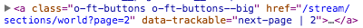

Mollydobbin
Track all the interaction events! Visualise the data to grok user behaviour!
Expose all elements that ought to be tracked but aren't.

Example of elements that need to be tracked.
How to do the thing
Track your elements by adding a data-trackable attribute.

Why "Mollydobbin"? He was one of the first Aboriginal trackers in Australia.